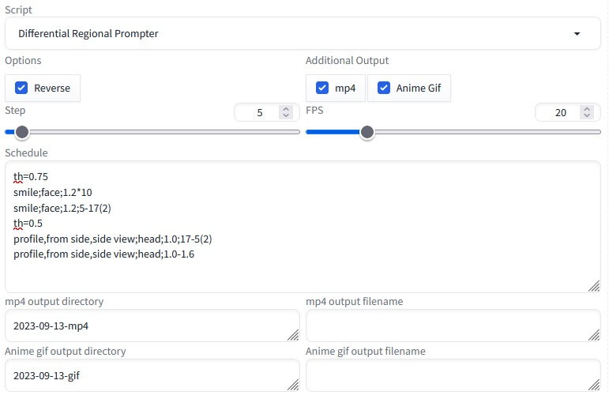
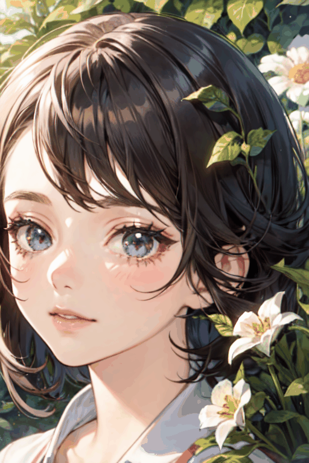
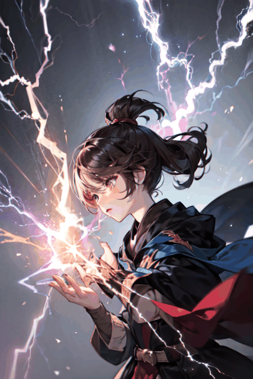

Ce script est un script auxiliaire pour Regional Prompter et fonctionne comme un script personnalisé pour Stable Diffusion web-ui (comme XYZ plot etc.). Ce script utilise la spécification de la région d'invite du Regional Prompter pour créer des images de différences et des animations cohérentes. Il est possible de créer des différences avec un certain degré de cohérence en utilisant la spécification conventionnelle de la région par l'invite. Cependant, lors du processus de débruitage, des différences apparaissent même en dehors de la zone spécifiée et les différences ne sont pas parfaites. Avec ce script, il est possible de refléter uniquement les différences dans la zone spécifiée par l'invite à partir de l'image initiale. En modifiant continuellement les différences, il est possible de créer des animations fluides.
L'image suivante montre la différence créée à l'aide de ce script, avec les yeux fermés appliqués uniquement à la zone calculée à partir des yeux ; la troisième image est un gif d'animation.
De cette manière, vous pouvez créer des images qui semblent cohérentes, sauf lorsqu'elles sont modifiées ; elles peuvent être utilisées à des fins diverses, telles que des images pour la méthode d'apprentissage de la photocopieuse de la LoRA. Vous pouvez également utiliser la fonction de planification pour créer des animations simples. Cette fonction fonctionne seule avec Regional Prompter et ne nécessite aucun module supplémentaire, etc.
En interne, la différence est créée à l'aide de l'édition de l'invite et de l'invite régionale pour spécifier la région. Cela permet d'obtenir un degré plus élevé de cohérence avec l'image originale. Par exemple, si vous souhaitez créer une différence avec des yeux fermés et que vous ajoutez des yeux fermés à l'invite, l'ensemble de l'image risque d'être modifié de manière significative. Par conséquent, en utilisant [:yeux fermés:4] et en appliquant les yeux fermés à partir de la quatrième étape, vous pouvez obtenir une cohérence avec l'image originale. L'étape dans l'écran des paramètres indique l'étape de début de l'édition de l'invite.
Sélectionnez l'invite régionale différentielle dans le script - si l'invite régionale est installée, aucun autre paramètre n'est nécessaire.
L'activation de l'option Inverser génère la vidéo en sens inverse. La raison pour laquelle cela est nécessaire est décrite ci-dessous.
Choisissez de générer une vidéo (mp4) ou un Anime Gif. S'ils sont sélectionnés, ils seront générés directement dans le dossier Output.
Spécifie le pas de départ utilisé dans l'édition de l'invite. En général, un pas de 4~6 est suffisant.
Définit la fréquence d'images utilisée lors de la création de la vidéo. La durée des gifs animés est calculée sur la base de 1000/FPS.
Saisissez l'invite de différence. Voir le cas d'utilisation pour une explication détaillée.
Entrez le répertoire dans lequel le mp4 sera produit. S'il est vide, il sera placé directement sous le dossier output/txt2img-images. Si vous entrez une valeur ici, le répertoire spécifié sera créé directement sous output.
Spécifie le nom du fichier mp4. S'il est vide, les fichiers sont numérotés drp.mp4,drp_1.mp4... S'il est vide, un fichier numéroté séquentiellement sera créé. Si vous entrez test ici, des fichiers numérotés séquentiellement tels que test.mp4,test_1.mp4 seront créés. Aucun écrasement n'est effectué.
Saisissez le répertoire dans lequel les images animées seront produites. S'il n'est pas renseigné, il sera placé directement sous le dossier output/txt2img-images. Si vous entrez une valeur ici, le répertoire spécifié sera créé directement sous output.
Spécifie le nom du fichier Anime gif. S'il est laissé vide, les fichiers seront numérotés drp.gif,drp_1.gif... S'il est vide, des fichiers avec des numéros séquentiels sont créés. Si vous entrez test ici, des fichiers numérotés séquentiellement tels que test.gif,test_1.gif seront créés. Aucun écrasement n'est effectué.
Cette section suppose que vous créez une différence avec les yeux fermés. Tout d'abord, saisissez l'invite principale dans le champ de saisie normal de l'invite. Voici.
a girl in garden face close up, eyes
Disons que... Il est important de noter que EYES est saisi ici. Ceci est nécessaire pour le calcul de la région de différence. Ensuite, entrez ce qui suit dans le calendrier : dans le champ Paramètres du prompteur régional, entrez un seuil d'environ 0,6.
0
closed eyes;eyes;1.3
Si vous activez l'option Anime gif, vous pouvez également créer un Anime gif. Voici une explication de chaque valeur de réglage.
prompt;prompt for region calculation;weight;step
Saisissez chaque valeur de réglage sur chaque ligne, en les séparant par des " ;", comme dans le cas suivant.
Pour closed eyes;eyes;1.3;4, l'invite [ :(closed eyes:1.3):4] est saisie au moment de l'exécution.
Ensuite, créons une animation avec des changements continus. Saisissez ce qui suit dans Schedule sans modifier l'invite.
- 0*10
- smile;face;1.2;20-6(2)
- smile;face;1.2*10
L'ordre est celui de la ligne 1,
10 images de l'image initiale.
Diminuer le STEP de 20 à 6 par 2 avec une intensité SMILE de 1,2 pour la région FACE.
10 images avec une intensité SMILE de 1,5 pour la région FACE
Cela signifie que. Si vous saisissez 20-6, une série d'invites sera automatiquement saisie et générée, en diminuant d'un cran à partir de 20, 19, ...., . 6 et ainsi de suite, en diminuant d'un cran à chaque fois. . 6 et ainsi de suite, chaque étape diminuant d'une unité. Dans ce cas, l'échelon est diminué ou augmenté d'une unité. (2) spécifie l'augmentation ou la diminution à 2. Ainsi, dans le cas de 20-6(2), l'invite pour les étapes 20,18,16.... ...6 étapes sont générées à l'invite. Si les 20 étapes sont toutes générées à ce moment-là, le SMILE n'apparaît pas dans l'invite à l'étape = 20. En augmentant progressivement le nombre de pas reflétés à partir de cet état, l'intensité du sourire augmente. Ainsi, une animation est créée dans laquelle le sourire est progressivement généré.
Ce format est également valable pour le poids, où la saisie de 1.0-1.3 produit automatiquement une série de valeurs 1.0, 1.1, 1.2, 1.3. Dans ce cas, l'augmentation dépend du nombre de décimales : écrire 1.00-1.10 donnera des incréments de 0.01. Utilisez () pour spécifier l'intervalle d'incrémentation : 1.0-1.3 (0.05) signifie une augmentation de 1.0 à 1.3 par incréments de 0.05. Dans ce cas, 1.00, 1.05, 1.10, 1.15, 1.20, 1.25, 1.30 et 7 images sont créées.
Des instructions telles que step=5 th=0,45 ex-on,0,01 ex-off peuvent être introduites. Le pas, la valeur seuil pour la spécification de la zone, etc. peuvent être modifiés au cours du processus.
ex-on et ex-off sont des réglages pour les seeds supplémentaires. Comme certains d'entre vous se demandent peut-être "qu'est-ce que c'est que ça ?", laissez-moi vous expliquer : vous savez qu'une graine qui diffère de 1 donnera une image complètement différente. la graine est une valeur entière, de sorte que les valeurs inférieures à 1 ne peuvent pas être décalées, mais la graine supplémentaire rend cela possible. Les semences supplémentaires permettent d'obtenir des images complètement différentes. Cela fonctionne bien pour les arrière-plans, les effets, etc. L'image suivante a été créée avec les instructions suivantes
0
ex-on,0.005
lightning_thunder;1.00-1.05
0,005 est la quantité de changement dans la graine supplémentaire. Si vous le réglez à ce niveau, l'effet sera semblable à un éclair. Notez que si vous le réglez à un niveau plus élevé, l'image aura l'air d'avoir été créée à partir d'une graine complètement différente, ce qui la rendra insignifiante.
Vous pouvez spécifier une région pour plusieurs mots en les reliant entre eux, par exemple lightning_thunder. Le champ de saisie de l'invite doit également contenir les mots reliés. 1.00-1.05 sont des incréments de 0.01 pour demander à l'utilisateur de dessiner cinq motifs.
;lightning_thunder;1.00
cinq fois parce qu'il s'agit de la même instruction et qu'elle n'est donc calculée qu'une seule fois.
#smile and blink
0*20
smile;face;1.2;13-6
smile;face;1.2*10
smile;face;1.2;6-13
0*20
closed eyes;eyes;1.4*3
0*20
L'ordre est celui de la ligne 1,
Les lignes qui ne correspondent pas au format sont ignorées.
Affichage de l'image initiale de 20 images
Spécifiez (sourire:1.2) dans la zone du visage, en diminuant de l'étape 13 à 6.
Spécifier le sourire dans la zone du visage pour 10 images (l'étape est la valeur par défaut).
Spécifiez (smile:1.2) dans la zone du visage tout en augmentant la valeur de l'étape 6 à 13.
de l'étape 6 à l'étape 13
Affichez l'image initiale pour 20 images
Spécifiez (yeux fermés:1.4) pour la zone des yeux.
Affichez l'image initiale pour 20 images.